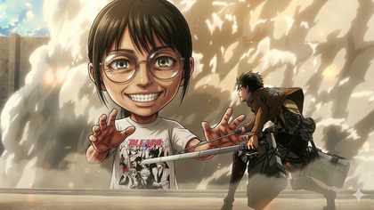

作者介紹
我是陳泱儒。這裡記錄我的繪畫作品、學習經歷與創作過程。我希望透過作品整理自己的觀察、想法與不同階段的嘗試，也讓每一次創作都成為學習歷程的一部分。

個人經歷
學習與探索
我持續接觸不同的創作方式，從日常觀察、參考資料蒐集到實際練習，逐步認識構圖、比例、光影與色彩之間的關係。不同階段的作品也保留了當時的想法與技術變化。
在創作過程中，我不只把完成一張畫當作目標，也會回頭整理哪些地方成功、哪些地方需要重新調整。透過反覆比較與修正，慢慢建立自己的判斷方式，並嘗試找到更適合自己的表現方向。
未來希望繼續接觸更多媒材、題材與繪畫方法，讓作品集不只是展示完成品，也能清楚記錄自己的學習軌跡與成長。
繪畫過程
從構想到完成
開始一張作品前，我會先確認想表達的主題與情緒，再蒐集姿態、光線、服裝、場景或色彩相關的參考資料。這個階段的重點不是立刻畫細節，而是先決定整張作品最重要的視覺方向。
接著會用較簡單的線條建立草稿，確認人物比例、畫面重心與各元素的位置。構圖穩定後，再逐步加入明暗、色彩與細節，過程中持續調整主體和背景之間的關係，避免畫面失去焦點。
完成前，我會重新檢查整體比例、光影、色彩與留白，並比較作品是否仍符合一開始設定的主題。最後的修正通常不是增加更多細節，而是刪除不必要的資訊，讓畫面更完整、清楚。